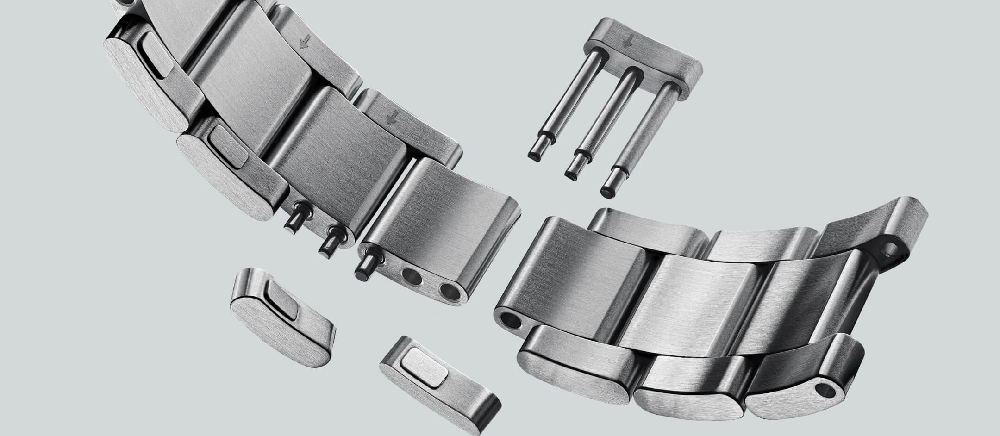
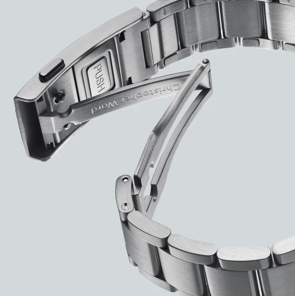

Christopher Ward Introduces the iLink™ Tool-Free Bracelet Resizing System
Christopher Ward has added a tool-free sizing system, branded iLink™, with the tech debuting on the recently revised C63 Sealander collection. Today, the system is available in two bracelet styles: the brand's bestselling three-link Bader and the more dressy five-link Consort.
 Nenad Pantelic • May 13, 2026
Nenad Pantelic • May 13, 2026

This iLink™ solution simplifies a traditionally frustrating task: resizing a steel bracelet at home. Rather than screws or push pins, the iLink™ links have a small button on the underside of each removable link. Pressing the button releases the outer link from the pin that was holding it.
According to Christopher Ward, the first five links on each side of the clasp carry the mechanism, so a wearer can add or remove length without a screwdriver, a clamp, or a trip to a jeweller. The remaining links use single screws.
Jörg Bader Jnr, who oversaw the design, frames it as a continuation of the brand's R&D. CW first moved from press-fit pins to screwed links. And now the company went a step further with the iLink™ system.
Each removable segment has its own internal mechanism with small springs. Mr. Bader describes the result as "complex but reliable, functional, elegant, secure, and easy to use".
New and improved Bader and Consort bracelets
When it comes to the whole bracelet it has been reworked rather than simply fitted with new links. It is built from 316L marine-grade stainless steel with a brushed finish and a "Christopher Ward" engraving, and uses a micro-adjustable ratchet clasp for fine on-the-wrist adjustment.
The brand says an increased taper makes it sit slimmer than the bracelet it replaces, and the quick-release system has been revised to make switching to straps easier.

One significant limitation: the iLink™ bracelets are built specifically for the second-generation Sealander and are not compatible with previous-generation models.
Tool-free sizing is not new to the wider industry, Cartier and TAG Heuer offer comparable systems, but it still uncommon in the CW's price point.
The updated C63 Sealander range that the bracelet ships on spans 36mm, 39mm, and 42mm cases in time-only and GMT configurations, with current pricing from roughly $1,375 to $1,675 depending on model and bracelet choice.
Price and Availability
Existing second-generation Sealander owners can also buy the iLink™ bracelets separately. Christopher Ward lists the iLink™ Bader at $330 in all three sizes (36mm, 39mm, and 42mm), and the more dressy iLink™ Consort at $385 across the same 36mm, 39mm, and 42mm fittings.
The 36mm and 39mm versions use a 20mm lug width, while the 42mm versions step up to 22mm.